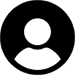

Mahasiswa yang berfokus pada ekonomi berkelanjutan, manajemen lingkungan, dan inovasi teknologi untuk masa depan yang lebih hijau.
Saya memiliki ketertarikan mendalam pada konsep **Circular Economy** dan bagaimana teknologi digital seperti AI dan IoT dapat mengoptimalkan penggunaan sumber daya. Saya juga aktif mendalami kebijakan lingkungan, terutama terkait transisi energi terbarukan dan mekanisme pasar karbon.
Analisis model bisnis platform berbagi dan efisiensi aset melalui ekonomi sirkular.
Studi mengenai investasi Energi Baru Terbarukan (EBT) dan manajemen emisi karbon.